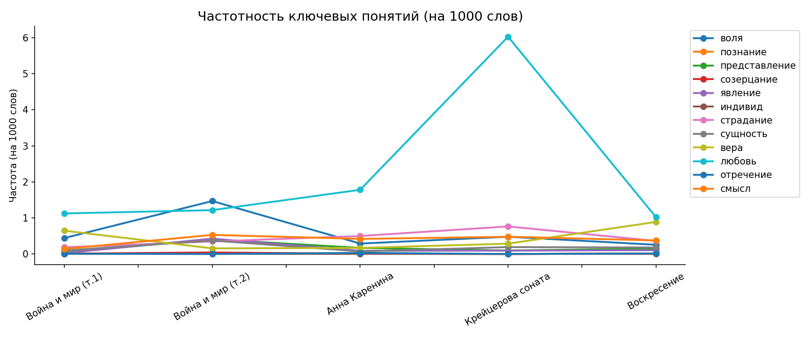
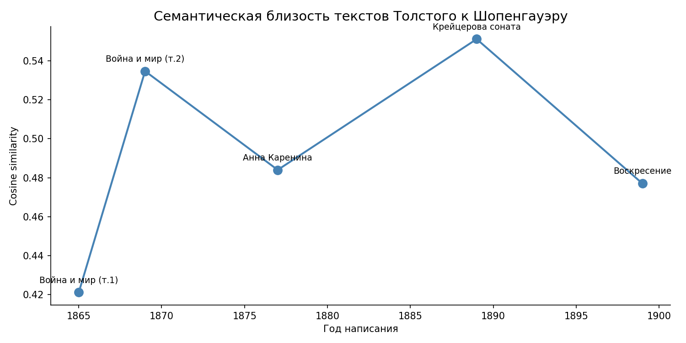
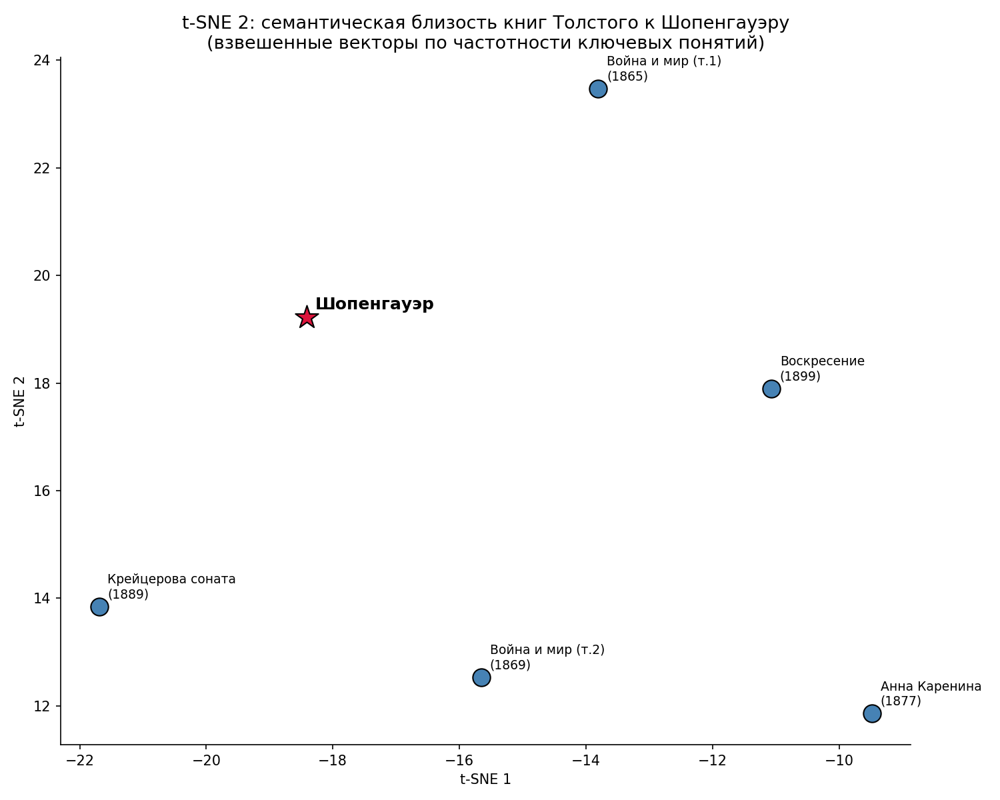

Корпусно-лингвистическое исследование эволюции философских мотивов
H2: «Война и мир» т.1 далёк от Шопенгауэра, т.2 заметно ближе.
H3: В «Воскресении» шопенгауэровские маркеры переосмысляются в собственную толстовскую этику.
Топ-40 слов: воля, познание, мир, явление, жизнь, природа, форма, закон, идея, сила, представление, вещь, объект, индивид, понятие, отношение, основание, образ, сущность, страдание...

Динамика ключевых шопенгауэровских понятий в хронологии Толстого

Подтверждение H1 — чёткая инвертированная U-кривая с пиком в середине 1880-х

Положение произведений Толстого относительно корпуса Шопенгауэра
Хотя исследование подтверждает значительное влияние философии Шопенгауэра на Толстого с пиком в период «Анны Карениной» — «Крейцеровой сонаты» и последующим переосмыслением в позднем творчестве, выборка и методы не позволяют считать его в полной мере достоверным. Нужно расширить выборку.
Корпусное исследование • 2026